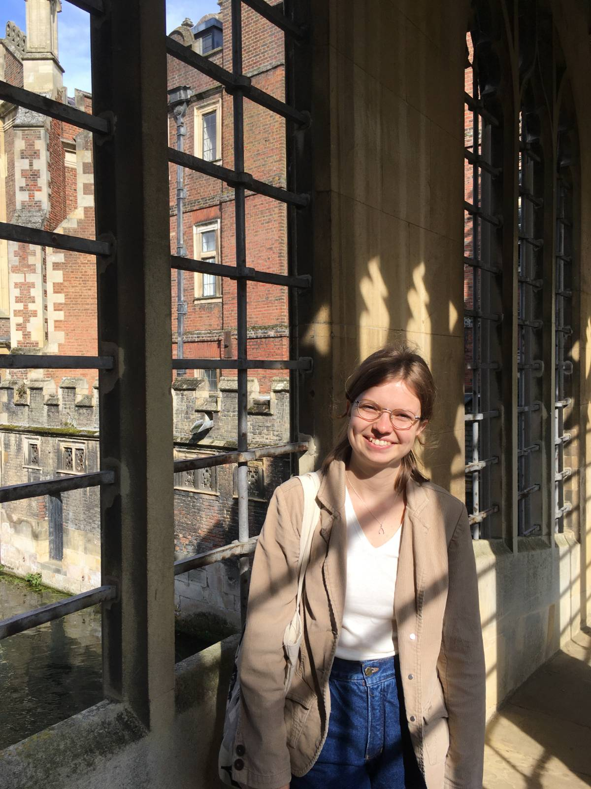

Isabella Jakobsen Szállás is a writer and literary translator working from Hungarian. Born in London to Hungarian and Norwegian parents, I grew up as a 'third culture kid' mostly in the UK, but I've also lived in Hungary and Spain. I have a love of languages which was nurtured by my multicultural background and education in international schools. I speak six languages fluently. I studied classical languages and literature at UCL, taking an Erasmus year abroad in Bologna. My dissertation about Miklós Radnóti’s translations from Latin and antifascist classical studies in pre-WW2 Hungary earned the Dean's List award. In 2023, I attended Bristol Translates Summer School and, in 2024, an online Hungarian Literary Translation course with the Hungarian-American translator Tímea Sipos. I recently graduated with distinction from the Literary Translation Postgraduate Programme at the Balassi Institute in Budapest. During the programme I was mentored by translator Anna Bentley and in my final dissertation project I translated the work of the folk surrealist poet István Kormos. I've translated works by István Kormos, Péter Kántor, Péter Hajnóczy, Panni Puskás, Balázs Mohácsi, and Péter Görcsi. My translations have appeared in Hungarian Literature Online (2025, forthcoming). I also publish essays and reviews of books, poetry and translations on my Substack. I'm currently based in Budapest.